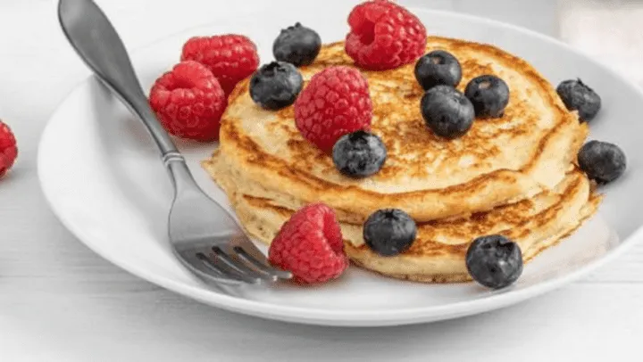
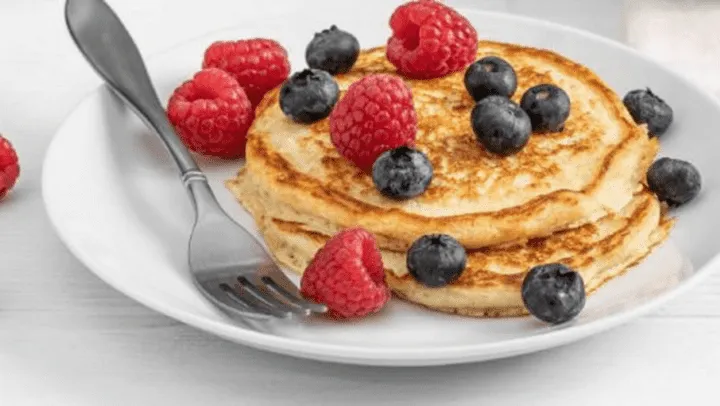

Panqueque saludable
 

Esta receta de panqueques, la podes usar para el desayuno o para una colación saludable. Es muy facil y queda buenisimo!
INGREDIENTES:
PREPARACIÓN:
- Colocar en la licuadora o en un bowl el huevo, la esencia de vainilla, la avena, el polvo de hornear, el Endulzante, y un poco de agua, mezclar hasta obtener una consistencia homogénea.
- Calentar una sartén a fuego medio con fritolin o unas gotas de aceite.
- vierte un poco de la mezcla anterior, podés ayudarte con una cuchara para extender de manera uniforme.
Lo podes acompañar con 1/2 fruta arriba del panqueque, 1 puñado de arándanos, o 1 cucharadita de queso crema.